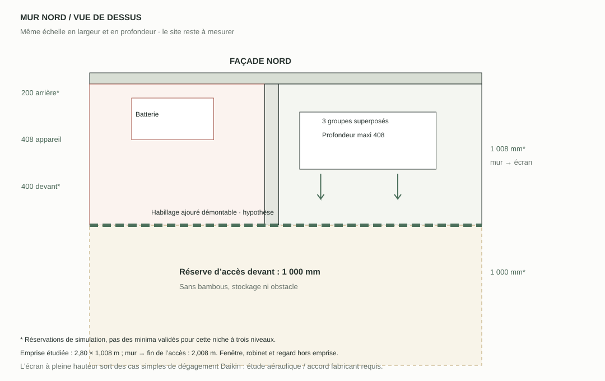
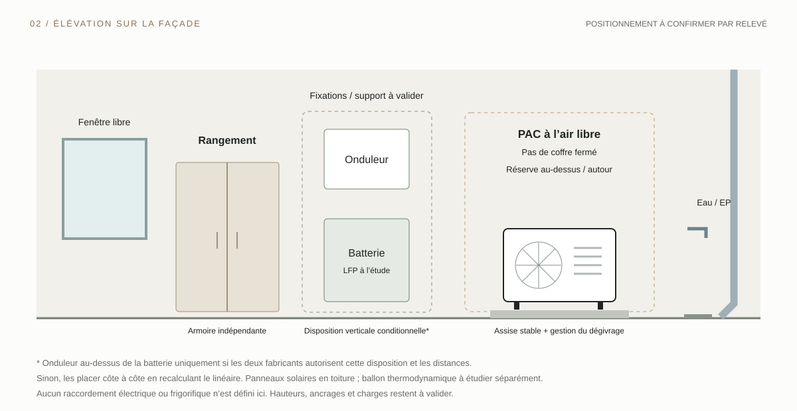

01 / Rangement
Fin et indépendant.
Une armoire peu profonde, accessible en façade. Ne pas prolonger le rangement autour de la PAC ou des batteries ; aucun stock inflammable dans les réservations techniques.
HL Home / Énergie / Mur nord
Une implantation compacte contre la façade : le rangement, le solaire et la PAC. L’espace gagné vient de l’organisation, avec les dégagements nécessaires autour de chaque équipement.
Les sept vues permettent d’identifier les obstacles, mais pas de mesurer le passage. L’ordre proposé et les enveloppes sont schématiques ; ni la longueur disponible ni la compatibilité des équipements ne sont encore validées. Aucun minimum universel n’est inventé.


L’implantation proposée
Sur la portion de mur entre la fenêtre et la descente d’eau, réserver trois zones distinctes. Rangement peu profond côté fenêtre, équipements solaires dans la zone sèche, PAC à l’air libre dans sa propre enveloppe. Les positions relatives et distances devront être ajustées au relevé et au choix des modèles.

01 / Rangement
Une armoire peu profonde, accessible en façade. Ne pas prolonger le rangement autour de la PAC ou des batteries ; aucun stock inflammable dans les réservations techniques.
02 / Solaire + batteries
Onduleur et batterie restent hors des projections du robinet, de la descente et du risque d’inondation. Matériel autorisé en extérieur, support adapté à la charge, ventilation et plages de température vérifiées sur les notices exactes.
03 / PAC
Conserver les dégagements arrière, latéraux, supérieurs et avant imposés par le modèle. Couper les bambous suffisamment pour le soufflage et éviter la recirculation ; prévoir aussi l’accès pour extraire et entretenir l’unité.
L’organisation verticale

Les panneaux photovoltaïques restent un projet en toiture, dont l’orientation et les ombrages sont à réétudier. Le ballon thermodynamique cité dans le dossier est conservé comme sujet séparé : son implantation dépend du volume d’air et du type de raccordement, et n’est pas supposée possible dans ce passage.
Les points qui fixent le plan
Si la largeur ou la longueur utile est insuffisante, dissocier les implantations. La réduction de la circulation souhaitée ne permet pas de réduire les dégagements de ventilation, de maintenance ou de sécurité.
Le relevé à compléter
Calcul géométrique simple : largeur du passage − recul arrière − profondeur PAC − maximum du dégagement avant et de l’espace de maintenance. Les cotes viennent du relevé et de la notice du modèle choisi. Ce calcul ne vérifie ni les obstacles, ni le débit d’air, ni la zone de protection.
Saisie temporaire, sans envoi ni sauvegarde. Compléter aussi le linéaire libre, les hauteurs, les obstacles et les réserves latérales sur le relevé de terrain.
Photographies IMG_6099 à IMG_6105 fournies par Hugo. Le plan est une proposition d’organisation fondée sur ces vues, pas un relevé métrique.
SolarEdge — guide d’installation Home Battery 400V, version 1.2 : exemple documenté de contraintes liées à l’eau, aux supports et aux dégagements. Cette batterie n’est pas sélectionnée pour le projet LFP et ses cotes ne sont pas transposées au dessin.
Daikin Altherma 4 H — notice d’installation, zones de protection R290, §4.1.1. Les notices du modèle retenu et l’examen du site par l’installateur priment pour dimensionner l’implantation.